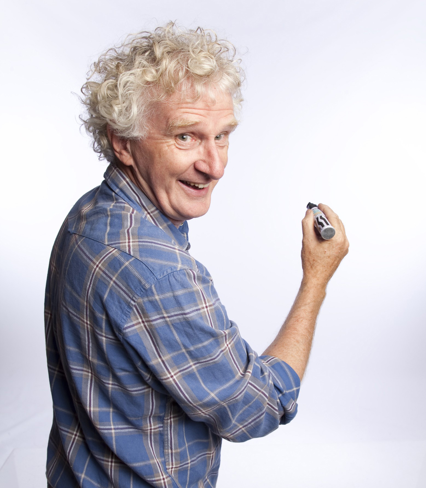

My Inspiration


My hobby is drawing. I mostly draw pictures of people, animals and birds. I use crayons, pencils, colour pencils etc to draw pictures. During birthdays of my parents, sister and friends, I gift my best drawings to them!
I think drawing is the best hobby. You can create art anywhere as long as you have two things: pencils and paper. It's good to start at a young age because it gives you a chance to start using your brain and to be creative. Also, it is an opportunity to challenge thinking skills and develop learning skills.
Drawing is fun because it is a form of self-expression. You can make it whatever you want it to be, and create what you wish. Why wouldn't it be fun? There are some people than enjoy expressing themselves through writing, some people love to dance.
The Scream is the popular name given to a composition created by Norwegian Expressionist artist Edvard Munch in 1893. The original German title given by Munch to his work was Der Schrei der Natur, and the Norwegian title is Skrik.